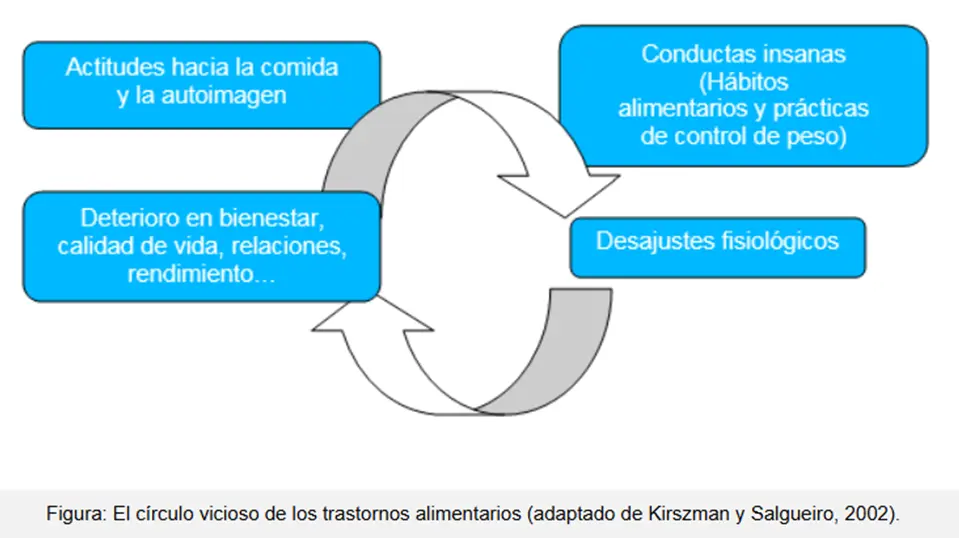

Trastornos alimentarios
Los trastornos alimentarios afectan a casi una de cada diez personas en todo el mundo, y en general se caracterizan por una alteración persistente en la alimentación o un comportamiento relacionado con esta que lleva a una alteración en el consumo o en la absorción de los alimentos. Estos provocan un deterioro significativo en la salud física y el funcionamiento psicosocial. .
Por Virginia Funes y Morena Celiz
Introducción
Los trastornos de la alimentación son trastornos del comportamiento que se caracterizan por una alteración grave y persistente de la conducta alimentaria, acompañada de pensamientos y emociones angustiantes que afectan tanto la salud física como la mental. Estas afecciones incluyen problemas en la forma de pensar sobre la comida, la alimentación, el peso y la figura, así como en los comportamientos alimentarios. Estos afectan la salud, las emociones y la capacidad para desenvolverte en ámbitos importantes de la vida. “En conjunto, los trastornos alimentarios afectan hasta al 5% de la población y se desarrollan con mayor frecuencia en la adolescencia y la adultez temprana”1. Los trastornos alimentarios más frecuentes son la anorexia, la bulimia y el trastorno alimentario compulsivo.
La mayoría de los trastornos alimentarios implica centrarse demasiado en el peso, la forma del cuerpo y la comida. En opinión de la fundadora del Centro de Trastornos Alimentarios en Rockville, Maryland, Jennifer Rollin, “en una cultura en la que prevalecen la vergüenza por la obesidad y la alimentación restrictiva, puede ser fácil normalizar los comportamientos de los trastornos alimentarios”2.
Los trastornos de la alimentación pueden derivar en comportamientos alimentarios peligrosos. Estos comportamientos pueden afectar gravemente la capacidad de obtener la nutrición que el cuerpo necesita. Pueden dañar el corazón, el aparato digestivo, los huesos, los dientes y la boca. También suelen estar relacionados con la depresión, la ansiedad, las autolesiones y pensamientos y comportamientos dañinos.
Trastornos alimentarios
Los trastornos de la conducta alimentaria (TCA) son un grupo de enfermedades mentales complejas donde los pacientes presentan preocupaciones irracionales en relación al peso, al cuerpo y/o los alimentos, junto con alteraciones en el patrón de las ingestas alimentarias. A diferencia de otras enfermedades en los TCA, además de las alteraciones psicopatológicas propias, puede haber consecuencias médicas que empeoren la sintomatología de base. En estos trastornos de base emocional, convergen muchos síntomas comunes con un marcado sufrimiento emocional, obsesividad, angustia, síntomas depresivos y dificultades por el funcionamiento habitual, con elevada repercusión en el paciente y su entorno familiar. Esta enfermedad puede afectar a personas de cualquier edad, sexo, raza o nivel socioeconómico, aunque lo más frecuente es que se inicien en la adolescencia o adultez joven.
Los trastornos alimentarios son afecciones médicas que afectan la capacidad del cuerpo para obtener una nutrición adecuada. Esto puede provocar problemas de salud como enfermedades cardíacas y renales, o incluso la muerte. Sin embargo, hay tratamientos que pueden ayudar.
Con el tratamiento adecuado, se pueden revertir o reducir los problemas graves causados por el trastorno alimentario. Si no se tratan de manera eficaz, los trastornos alimentarios pueden convertirse en problemas crónicos y, en algunos casos, pueden causar la muerte.

Fuente: Qué son los trastornos alimentarios.
Causas
Se desconoce la causa exacta de los trastornos de alimentación. Al igual que ocurre con otras afecciones de salud mental, puede haber distintas causas, como las siguientes:
- Genética. Es posible que algunas personas tengan genes que aumentan el riesgo de desarrollar un trastorno alimentario.<
- Biología. Los factores biológicos, como los cambios en las sustancias químicas del cerebro, pueden influir en estos trastornos.<

Fuente: Mauro Lorenzo | Bulimia y anorexia.
Factores de riesgo
Cualquier persona puede desarrollar un trastorno alimentario. Los trastornos alimentarios suelen comenzar durante la adolescencia y la juventud, aunque pueden producirse a cualquier edad.
Ciertos factores pueden incrementar el riesgo de desarrollar trastornos alimentarios, como los siguientes:
- Antecedentes familiares. Los trastornos alimentarios son más probables en personas con padres o hermanos que han tenido ese tipo de trastorno.
- Otros problemas de salud mental. Los traumas, la ansiedad, la depresión, el trastorno obsesivo compulsivo y otros problemas de salud mental pueden aumentar las probabilidades de tener un trastorno alimentario.
- Dietas e inanición. Hacer dieta con frecuencia es un factor de riesgo para desarrollar un trastorno alimentario, en especial si el peso corporal sube y baja constantemente al iniciar y abandonar nuevas dietas.
- Antecedentes de acoso por el peso. Las personas que han sido acosadas o sujeto de burlas por su peso son más propensas a desarrollar problemas con la alimentación o trastornos alimentarios.
- Estrés. Los cambios pueden causar estrés, ya sea el comienzo de la universidad, una mudanza, un trabajo nuevo o problemas familiares o de pareja. Y el estrés puede aumentar el riesgo de presentar un trastorno alimentario.
Conclusión
Los trastornos de la conducta alimentaria representan un serio problema de salud pública, caracterizado por alteraciones persistentes en la forma de alimentarse y en la percepción del cuerpo. Suelen estar fuertemente asociados a la presión de los estereotipos de belleza vigentes, que valoran de manera desmedida la delgadez y la apariencia física por encima de la salud y el bienestar. Estos modelos rígidos y muchas veces inalcanzables influyen en la construcción de la autoestima, especialmente durante la adolescencia.
Es importante destacar que los trastornos alimentarios no son una elección de vida, sino enfermedades graves que pueden provocar complicaciones físicas, problemas cardíacos, óseos y digestivos, así como también consecuencias emocionales profundas, entre ellas ansiedad y depresión.
La detección temprana, la sensibilización social y el acceso a tratamientos adecuados son claves para disminuir los riesgos y acompañar a quienes atraviesan estas afecciones. Reconocer la peligrosidad de los estereotipos de belleza y promover una relación más saludable con el cuerpo y la alimentación son pasos fundamentales para avanzar hacia la prevención y el cuidado integral de la salud.
Citas
- Extraido de ¿Qué son los trastornos alimentarios?. En: https://www.psychiatry.org/patients-families/eating-disorders/what-are-eating-disorders
- "Uno por uno cuáles son los trastornos alimentarios y cómo reconocerlos". En: https://www.infobae.com/salud/2023/02/27/uno-por-uno-cuales-son-los-trastornos-alimentarios-y-como-reconocerlos/
Bibliografía
- Lezama Reyes, Carlos A. “Salud, comunicaciones y redes sociales. Impacto de las redes sociales en los trastornos de alimentación”. En: https://www.alanrevista.org/ediciones/2015/suplemento-1/art-216/
- ¿Qué son los trastornos alimentarios?. En: https://www.psychiatry.org/patients-families/eating-disorders/what-are-eating-disorders
- “Trastornos de la conducta alimentaria”. En: https://kidshealth.org/es/teens/eat-disorder.html
- “Trastornos Alimentarios”. En: https://sanidad.castillalamancha.es/ciudadanos/trastornos-alimentarios/que-son-los-trastornos-alimentarios
- "Uno por uno cuáles son los trastornos alimentarios y cómo reconocerlos". En: https://www.infobae.com/salud/2023/02/27/uno-por-uno-cuales-son-los-trastornos-alimentarios-y-como-reconocerlos/
- Weinstein, Melina, “Trastornos alimentarios y de la ingestión de los alimentos”. En https://www.psi.uba.ar/academica/carrerasdegrado/psicologia/sitios_catedras/electivas/616_psicofarmacologia/material/trastornos_conducta_alimentaria.pdf
Imagen de portada | ShutterStock